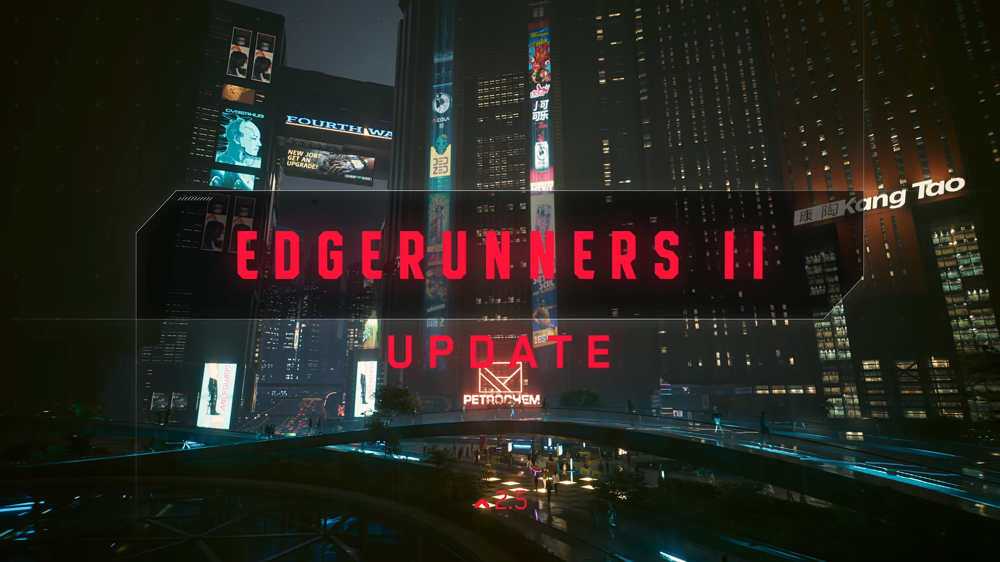
엣지러너2 인게임 업데이트
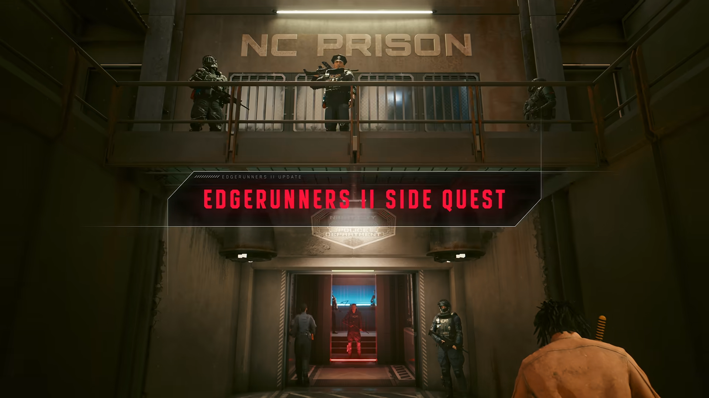
엣지러너2 기반 사이드 퀘스트 추가
* NC프리즌은 산토 도밍고의 아로요 지역에서 NCPD가 운영하는 교도소.
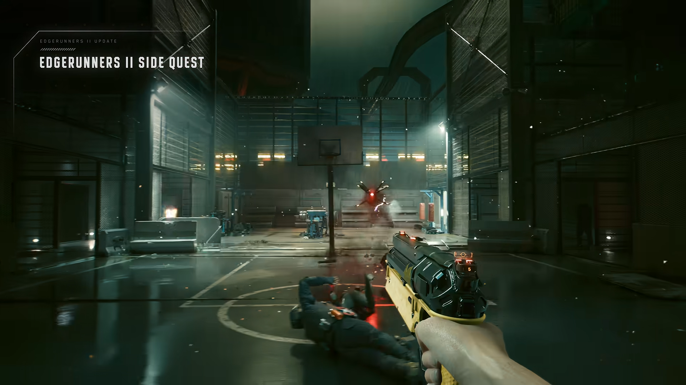
엣지러너 시즌2의 주요 인물, 위크 '킹'즐리가 사용하던 시그니쳐 무기를 인게임 내에서 사용하는 것으로 확인
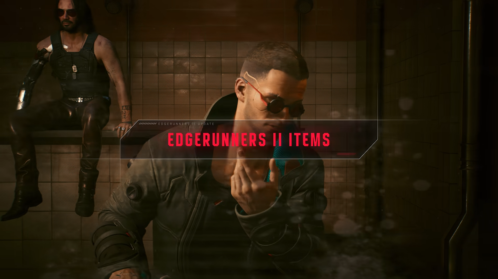
엣지러너2 패션 아이템 추가
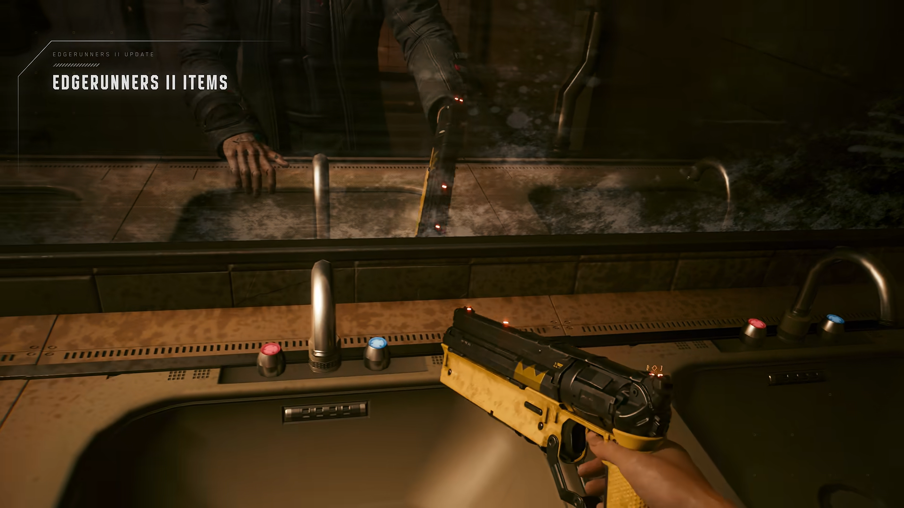
킹의 시그니쳐 마크
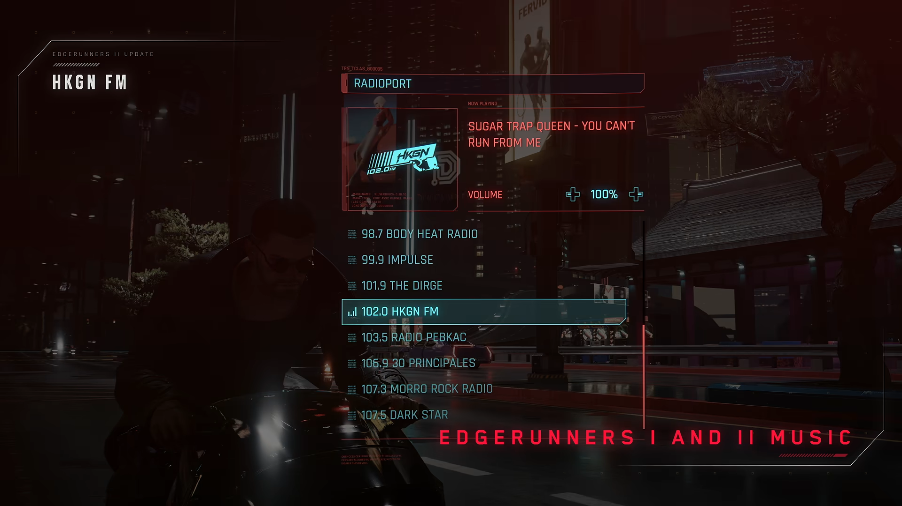
신규 음악 채널 추가
(엣지러너 시즌1과 시즌2의 음악이 수록된 것으로 보임)
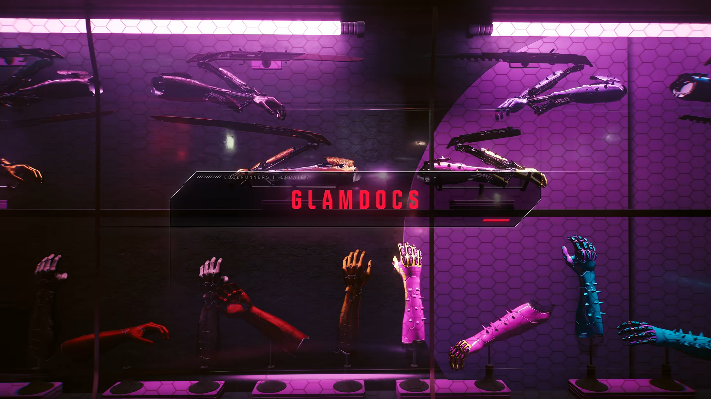
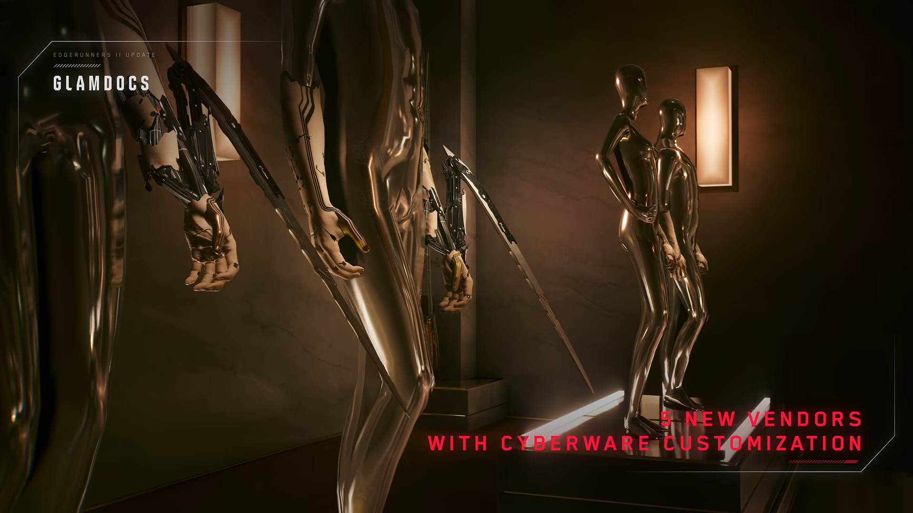
사이버웨어를 커스터마이징 해주는 신규 리퍼닥 장인 5명 추가
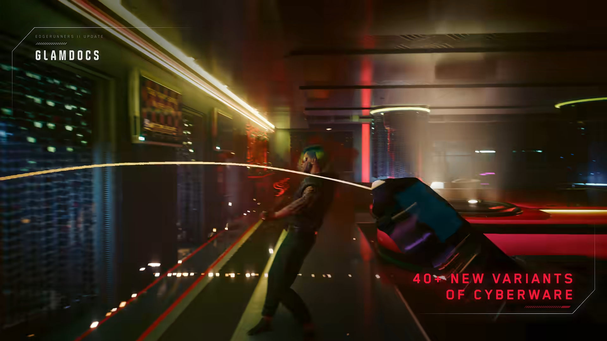
신규 리퍼닥을 기반으로 한 신규 사이버웨어 40종 추가
(캡쳐짤은 와이어를 이용한 액션으로 추정)
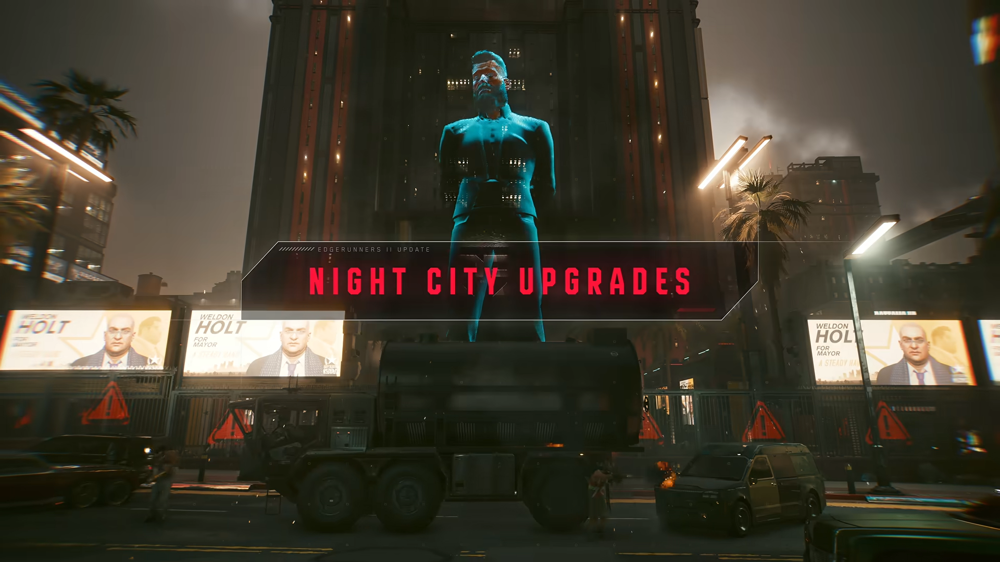
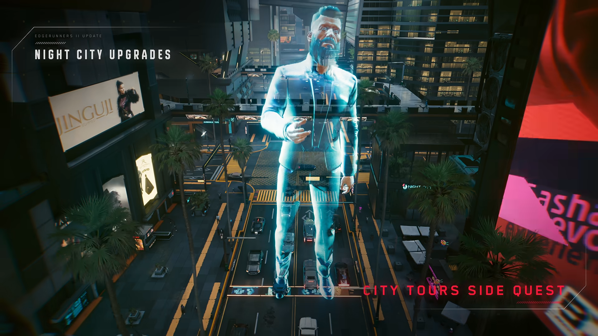
'시티투어' 사이드퀘스트 추가
자세한 내용은 아직 미공개
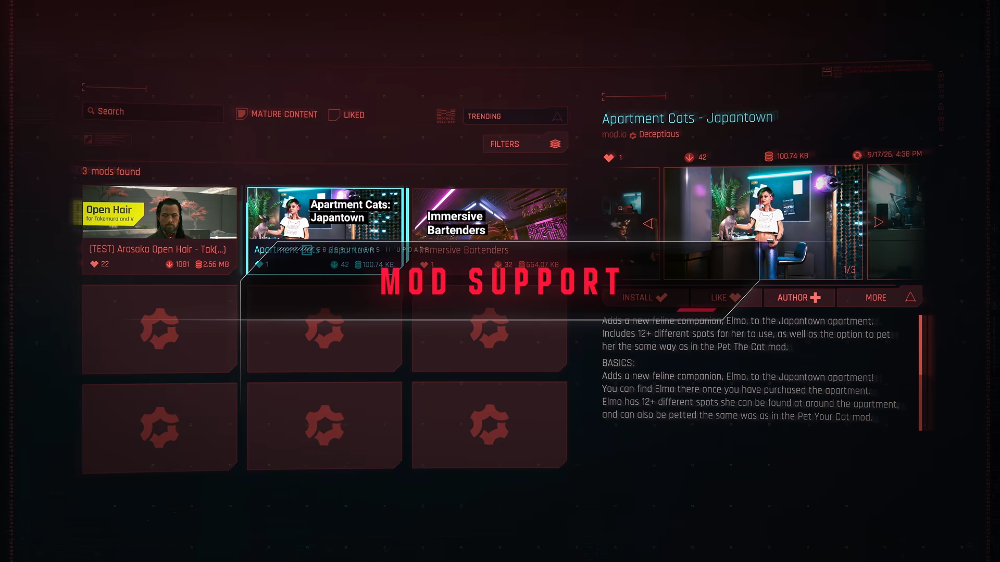
모든 플랫폼에서 모드 공식 지원
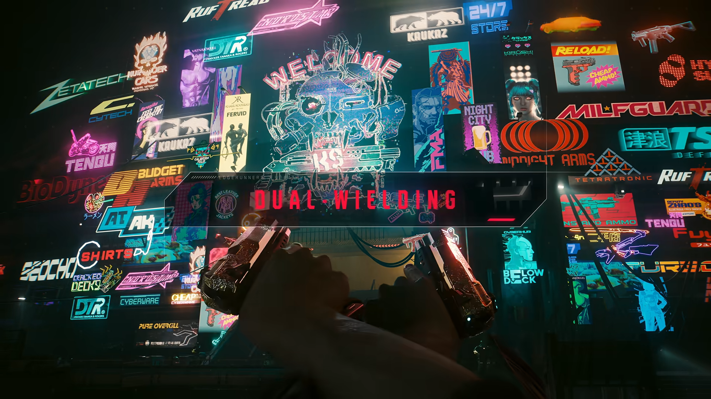
쌍권총 액션 추가
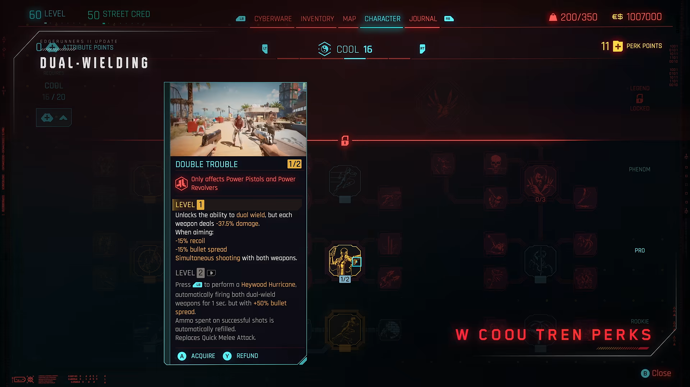
이를 기반으로 냉정 스킬 트리에 신규 액션도 추가
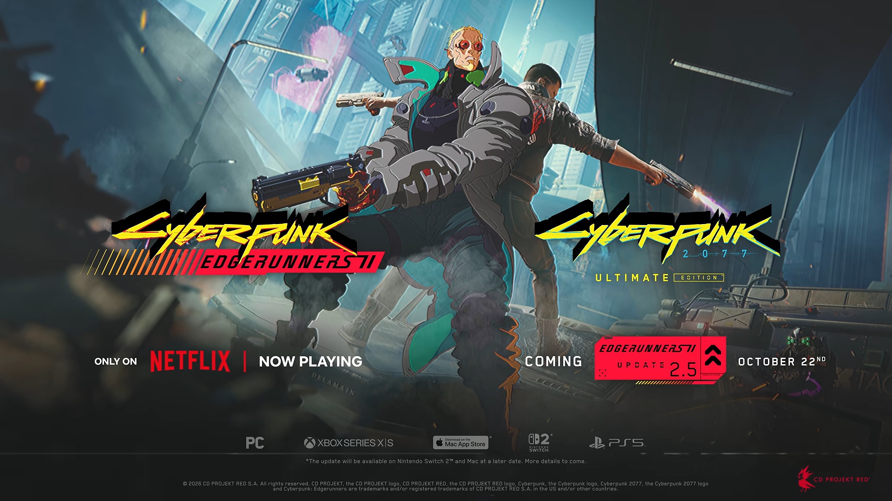
발표 즉시 (22일 0시) 업데이트 적용
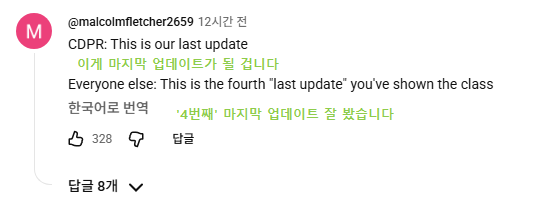
오 그럼 창작마당으로 외형모드 깔수 있나? 드디어 싸펑할때가 됐네